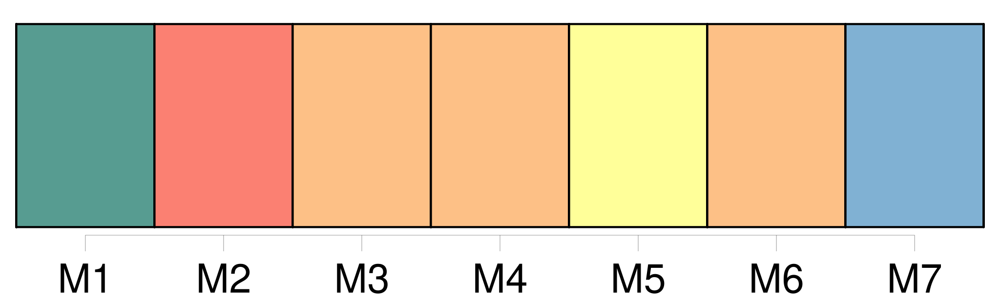
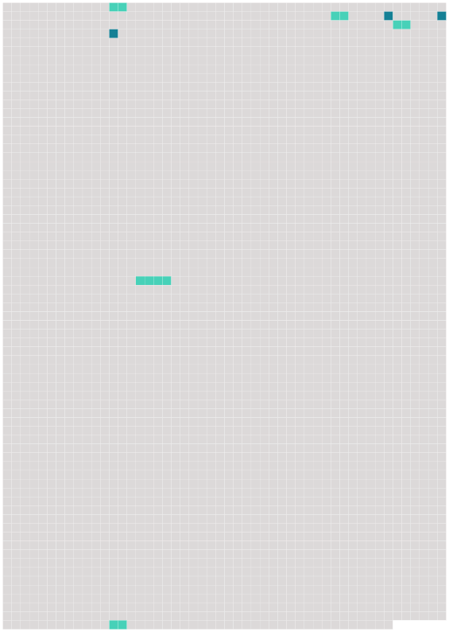

Longueur nb maillons : 8 mentions |
 |
Florent s'intéressa à une énorme voiture de boueux, pleine de [choux superbes] , qu'on avait eu grand'peine à faire reculer jusqu'au trottoir ; la charge dépassait un grand diable de bec de gaz planté à côté, éclairant en plein l'entassement des larges feuilles, qui se rabattaient comme des pans de velours gros vert, découpé et gaufré. Une petite paysanne de seize ans, en casaquin et en bonnet de toile bleue, montée dans le tombereau, ayant [des choux] jusqu'aux épaules, [les] prenait un à un, [les] lançait à quelqu'un que l'ombre cachait, en bas. La petite, par moments, perdue, noyée, glissait, disparaissait sous un éboulement ; puis, son nez rose reparaissait au milieu des verdures épaisses ; elle riait, et [les choux] se remettaient à voler, à passer entre le bec de gaz et Florent. Il [les] comptait machinalement. [75 phrases]
Je suis descendu de bonne heure, me doutant qu'il y aurait un lever de soleil superbe sur [ces gredins de choux] [95 phrases]
De proche en proche, le réveil gagnait la ville, du quartier populeux où [les choux] s'entassent dès quatre heures du matin, au quartier paresseux et riche qui n'accroche des poulardes et des faisans à ses maisons que vers les huit heures. |
 |
Il est possible de télécharger la ressource sur la page Ortolang |
Si vous avez des questions ou vous voyez des erreurs, merci d'envoyer un mail à silvia.federzoni89@gmail.com |